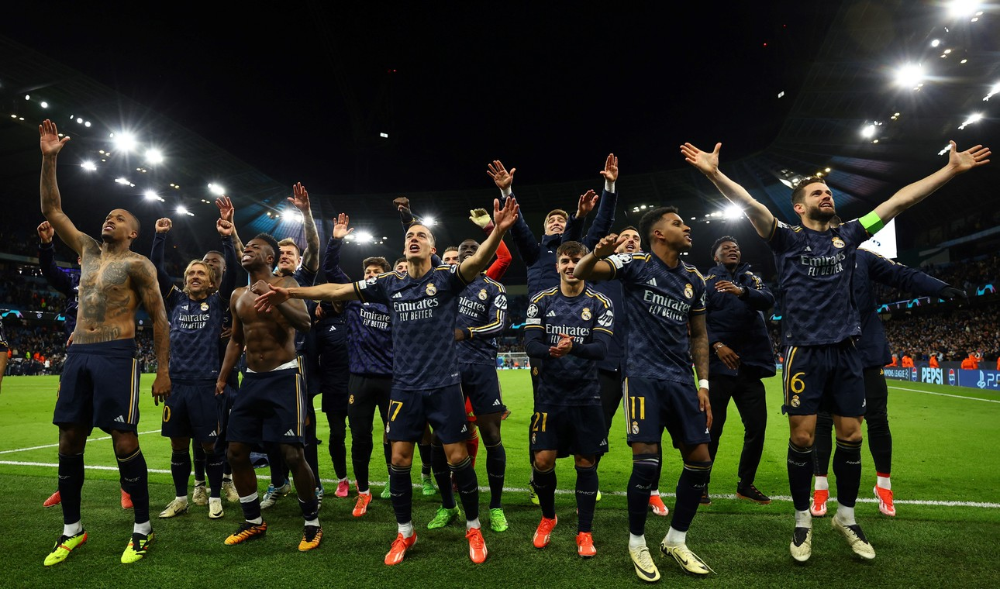

Real Madrid dio el golpe en Inglaterra y eliminó al Manchester City de la Champions
Por penales, el equipo de Carlo Ancelotti se quedó con el último boleto a las semifinales y será rival del Bayern Munich.

17/04/2024 12:46hs. Actualizado al 17/04/2024 20:02hs.
Fue una final anticipada. El último campeón contra el gran campeón. Manchester City y el fútbol total de Pep Guardiola ante el oficio del Real Madrid, el que siempre se convierte en un equipo talle XXL cuando está la Champions League de por medio. El 3-3 de la ida en España plantaba a los Ciudadanos con ventaja, aunque fue un duelo durísimo que terminó igualado 1-1, que se estiró al alargue y luego a los penales, donde el Real el que se quedó con el boleto para jugar la semifinal ante el Bayern Munich.
City en estado puro
Y eso hizo el local. Sin mucha precisión en los metros finales, pero con autoridad para manejar la pelota y merodear el área de Lunin. Con la presencia de De Bruyne, que buscó con remates de afuera, con los desbordes de Grealish (le puso un centro lindo a Haaland, que cabeceó por arriba), con el talento de Bernardo Silva -se apagó mucho en el ST-, estuvo siempre cerca... La más clara la tuvo el propio Silva, que se llevó por delante una pelota que el goleador noruego había conectado en el travesaño y la tiró afuera de manera increíble.
En media hora de juego, el City no se desdibujó pese a las frustraciones de cada ataque. El Real Madrid tampoco. Porque asumió que debía aguantar, retrasó las líneas, metió a Tony Kroos casi como un quinto defensor y juntó las líneas. ¿Así gana el Madrid? Supo asumir los tiempos del partido y que el equipo de Pep se le había venido con todo. Fue inteligente para hacerse cargo de sus limitaciones y, con otra faceta, defendió la ventaja.
¿Cuánto podría aguantar el Merengue? Porque apenas movieron la pelota para el segundo tiempo, el City fue con la voracidad de siempre. Tenía la responsabilidad y se hizo cargo. Y al minutos casi lo iguala con un derechazo de Grealish que llegó a despejar Lunin. Fue un monólogo celeste en campo del equipo de Carlo Ancelotti. Lo cercó. Lo sometió. Le impuso las condiciones a una Casablanca que se dedicó exclusivamente a pensar en meter alguna contra salvadora. Mientras tanto, el local buscaba a Haaland, con centros llovidos, con pases atrás, una referencia que no pudo hacer la diferencia. Fueron 15 minutos en los que el gran Real Madrid se mimetizó con el viejo ADN del Atlético del Cholo Simeone: garra, aguantar y sacarla larga.
Pero siempre flotó la sensación de que el empate era cuestión de tiempo, y llegó nomás a los 31 minutos del ST gracias a De Bruyne, el más lúcido para desenredar la maraña de piernas que había tejido el Real. Fue el mismo belga el que lo tuvo dos veces para cerrar la serie en los 90': primero con un zurdazo que manoteó Lunin y luego con un remate clarísimo en el área chica. No alcanzó y a sufrir en el desgastante alargue.
Tanto Pep como Ancelotti ya habían movido fichas porque sabían que el necesitaban algo más para el tiempo extra. El City apostó por Doku y Julián Álvarez para ser más agresivos, el Madrid por Modric e Ibrahim Díaz para tratar de tenerla un poco más. Los primeros 15' fue un calco del partido, el local buscando y el Merengue agazapado para la contra: y estuvo cerca con una llegada de Rudiger.
Pero la historia se definió en los penales. Julián abrió la serie y no le pesó la reponsabilidad: lo pateó con personalidad y adentro. Encima, el gran Modric falló el primero para el Madrid, que contó con la insólita ayuda de Bernardo Silva, que pateo suavecito al medio su penal y Lunin se la adivinó. Después erró Kovacic y la serie quedó sentenciada. Pasó el gran campeón, el que va por su 15 Champions, el que se agranda en las difíciles. Ahora lo espera el Bayern. Pero desde ya para ambos, gracias por el juego.